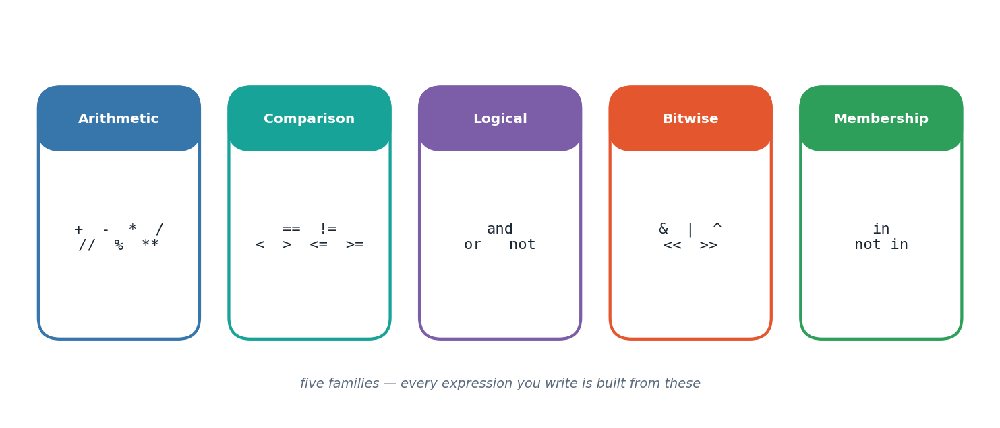

The big idea
A program that only stores values is a filing cabinet. What makes it a program is the ability to combine those values into new ones — and that combining is done by operators.
Python's operators fall into a handful of families, and the useful realisation is that they all behave
the same way structurally: they take one or two values (called operands), do something with them,
and hand back a result. 3 + 4 produces 7. 3 < 4 produces True. "ab" in "cabbage" produces
True. Different families, identical shape.
This chapter also introduces the standard library — the enormous collection of ready-made code
that ships with Python. Rather than writing your own square-root routine, you import math and use
math.sqrt(). Knowing when to reach for the library instead of writing it yourself is a real skill,
and it starts here with geometry formulas.

How it works
Arithmetic, including the two divisions
| Operator | Name | 17 and 5 give |
|---|---|---|
+ - * |
add, subtract, multiply | 22, 12, 85 |
/ |
true division → always float |
3.4 |
// |
floor division → drops the remainder | 3 |
% |
modulo → only the remainder | 2 |
** |
exponent | 17**2 → 289 |
% deserves special mention. "Is n divisible by 5?" is really "is n % 5 equal to zero?" — you will
use that trick constantly.
Precedence: the order Python evaluates in
Python follows the mathematical convention: ** first, then * / // %, then + -, then
comparisons, then and / or. When in doubt, use brackets — they cost nothing and remove all
ambiguity for whoever reads the code next.
Bitwise operators — thinking in binary
Every integer is stored as a pattern of bits. Bitwise operators work on those patterns directly:
| Op | Meaning | Example |
|---|---|---|
& |
AND — 1 only if both bits are 1 | 12 & 10 → 8 |
\| |
OR — 1 if either bit is 1 | 12 \| 10 → 14 |
^ |
XOR — 1 if the bits differ | 12 ^ 10 → 6 |
<< |
shift left — each shift doubles | 14 << 3 → 112 |
>> |
shift right — each shift halves | 14 >> 3 → 1 |
Membership: in
in asks "does this collection contain that item?" and works on strings, tuples, lists, sets and
dictionaries alike. One keyword, one meaning, many containers — that consistency is very Python.
The tasks
Everything above was theory. What follows is the lab work — each task stated, explained, then solved with code that really ran.
Task 1
Task 1 — Basic Arithmetic on Two Integers
Add, subtract, multiply, divide — the four operations every calculator starts with.
p, q = 12, 5 print("Sum: ", p + q) print("Difference: ", p - q) print("Product: ", p * q) print("Quotient: ", p / q)
Sum: 17 Difference: 7 Product: 60 Quotient: 2.4
Task 2
Task 2 — Area of a Circle from Its Radius
area = pi * r^2 — implemented with math.pi for precision.
import math circle_radius = 7.2 circle_area = math.pi * circle_radius ** 2 print(f"Area of circle (r={circle_radius}): {circle_area:.4f}")
Area of circle (r=7.2): 162.8602
Task 3
Task 3 & 4 — Evaluating `(x + y)^2`
Two variables feed a squared-sum expression.
x_val, y_val = 6, 2 squared_sum = (x_val + y_val) ** 2 print("x =", x_val, " y =", y_val) print("(x + y)^2 =", squared_sum)
x = 6 y = 2 (x + y)^2 = 64
Task 4
Task 5 — Confirming the Expected Result
With x=6, y=2, (x+y)^2 should equal 64. Quick sanity check.
expected = 64 actual = (x_val + y_val) ** 2 print("Expected:", expected, "| Actual:", actual, "| Match:", expected == actual)
Expected: 64 | Actual: 64 | Match: True
Task 5
Task 6 — Pythagorean Hypotenuse
c = sqrt(a^2 + b^2) for a right-angled triangle.
leg_a, leg_b = 6, 8 hyp = math.hypot(leg_a, leg_b) # hypot avoids manually squaring/rooting print("Hypotenuse:", hyp)
Hypotenuse: 10.0
Task 6
Task 7 — Simple Interest
SI = (P * R * T) / 100
principal_amt = 25000 annual_rate = 6.5 years = 3 simple_interest = principal_amt * annual_rate * years / 100 print(f"Simple Interest on Rs.{principal_amt} @ {annual_rate}% for {years}y = Rs.{simple_interest:.2f}")
Simple Interest on Rs.25000 @ 6.5% for 3y = Rs.4875.00
Task 7
Task 8 — Triangle Area via Heron's Formula
Given three side lengths, semi-perimeter s feeds sqrt(s(s-a)(s-b)(s-c)).
side1, side2, side3 = 7, 8, 9 semi_perimeter = (side1 + side2 + side3) / 2 triangle_area = math.sqrt( semi_perimeter * (semi_perimeter - side1) * (semi_perimeter - side2) * (semi_perimeter - side3) ) print(f"Triangle sides {side1},{side2},{side3} -> Area = {triangle_area:.3f}")
Triangle sides 7,8,9 -> Area = 26.833
Task 8
Task 9 — Seconds Broken into H:M:S
Using divmod twice avoids repeating the // and % math by hand.
raw_seconds = 9425 hrs, remainder = divmod(raw_seconds, 3600) mins, secs = divmod(remainder, 60) print(f"{raw_seconds} seconds = {hrs}h {mins}m {secs}s")
9425 seconds = 2h 37m 5s
Task 9
Task 10 — Swapping Two Values, No Temp Variable
Python actually offers a built-in tuple-swap, but doing it with pure arithmetic (as asked) is shown here using multiplication/division instead of the classic add/subtract trick.
val_a, val_b = 18, 55 print("Before:", val_a, val_b) val_a = val_a * val_b val_b = val_a // val_b val_a = val_a // val_b print("After: ", val_a, val_b)
Before: 18 55 After: 55 18
Task 10
Task 11 — Sum of the First n Natural Numbers
Closed-form n(n+1)/2 beats looping for large n.
count_n = 15 natural_sum = count_n * (count_n + 1) // 2 print(f"Sum of first {count_n} natural numbers = {natural_sum}")
Sum of first 15 natural numbers = 120
Task 11
Task 12 — Bitwise Truth Table
AND, OR, XOR for every combination of two bits, generated with a
comprehension over itertools.product.
from itertools import product print(f"{'a':>2} {'b':>2} | {'a&b':>4} {'a|b':>4} {'a^b':>4}") for bit_a, bit_b in product((0, 1), repeat=2): print(f"{bit_a:>2} {bit_b:>2} | {bit_a & bit_b:>4} {bit_a | bit_b:>4} {bit_a ^ bit_b:>4}")
a b | a&b a|b a^b 0 0 | 0 0 0 0 1 | 0 1 1 1 0 | 0 1 1 1 1 | 1 1 0
Task 12
Task 13 — Left and Right Bit Shifts
base_num = 14 shift_by = 3 print(f"{base_num} << {shift_by} = {base_num << shift_by}") print(f"{base_num} >> {shift_by} = {base_num >> shift_by}")
14 << 3 = 112 14 >> 3 = 1
Task 13
Task 14 — Membership Check in a Numeric Sequence
number_pool = (11, 22, 63, 84, 95) target_num = 63 print(f"Is {target_num} in {number_pool}? -> {target_num in number_pool}")
Is 63 in (11, 22, 63, 84, 95)? -> True
Task 14
Task 15 — Membership Check on a Character in a String
phrase = "Data Science with Python" target_char = "z" print(f"Is '{target_char}' present in the phrase? -> {target_char in phrase}")
Is 'z' present in the phrase? -> False
Common pitfalls
/ to give a whole number10 / 2 is 5.0, a float. Use // when you genuinely want an integer.0.1 + 0.2 is 0.30000000000000004. Binary can't store some decimals exactly — never test floats with ==.(a + b) * c says exactly what you mean.& with and& compares bits; and combines True/False. They are not interchangeable.